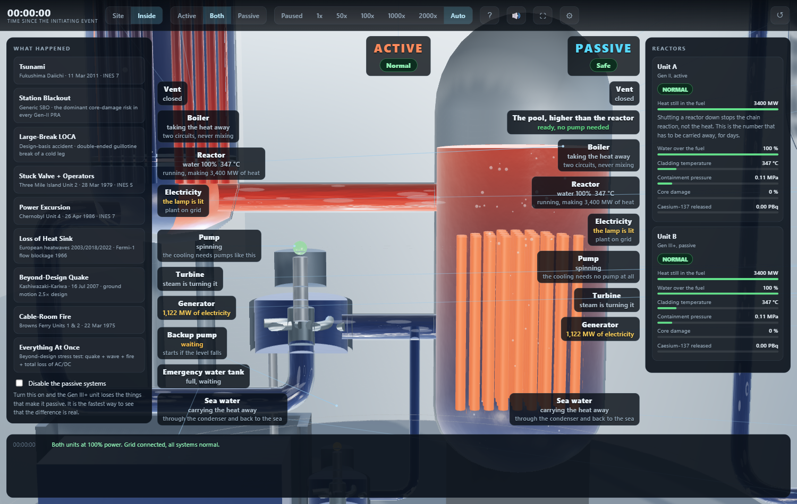
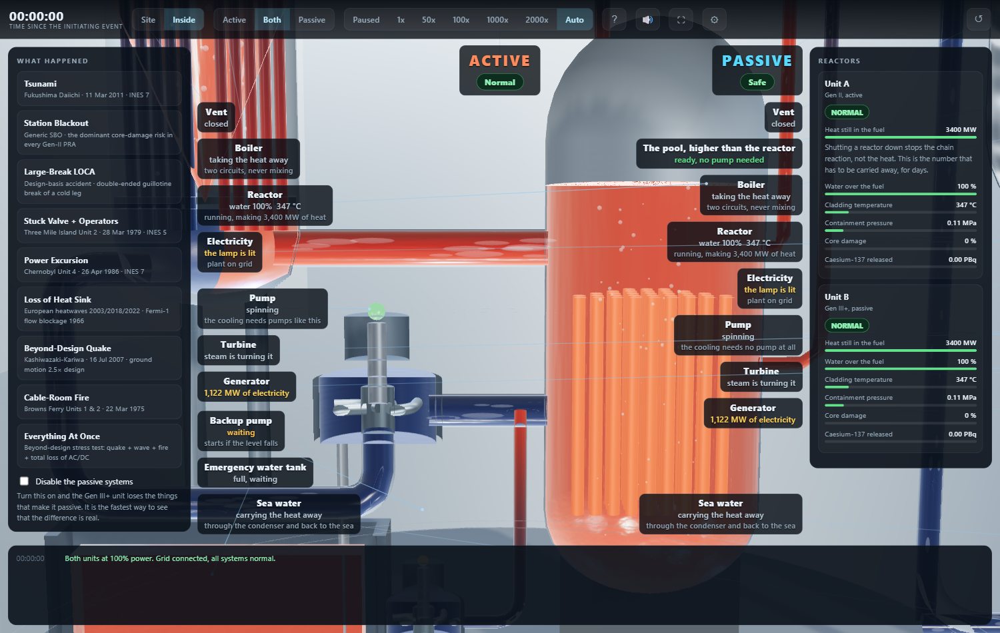
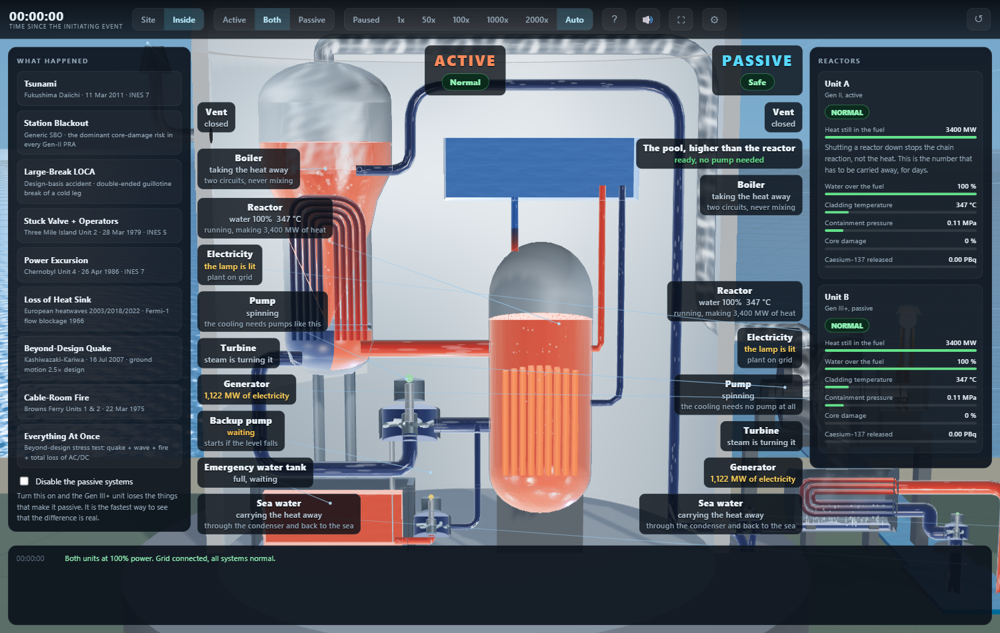
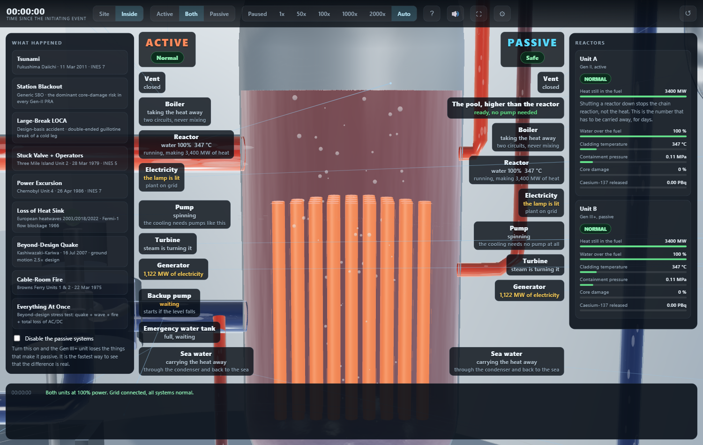
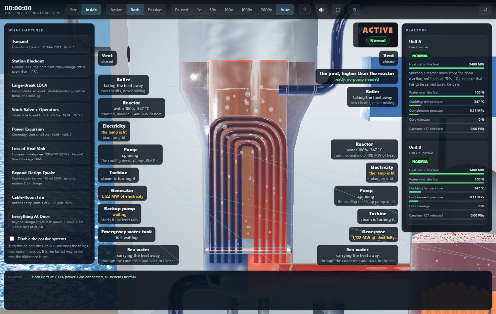
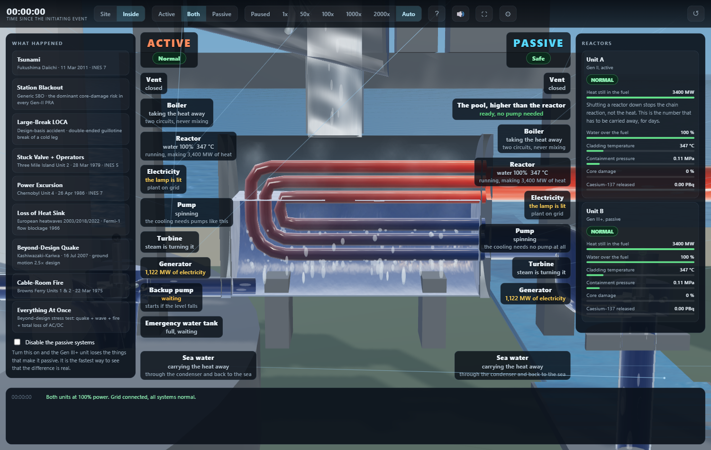
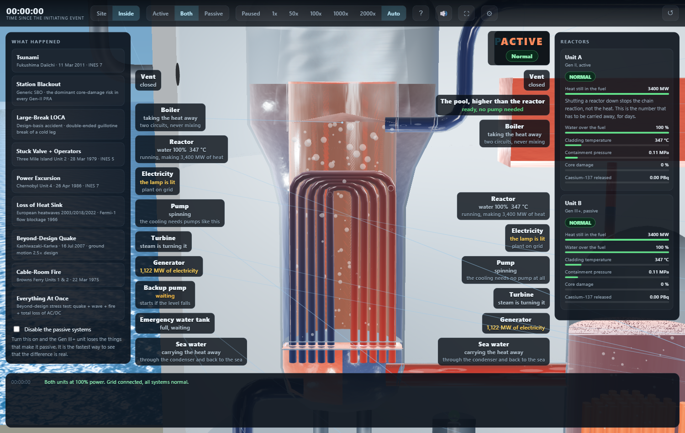
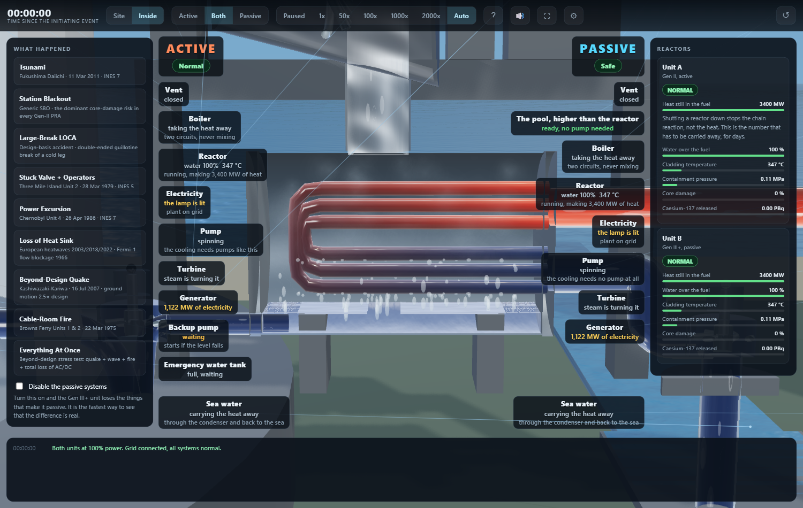

Particles in the water must read as flowing water, not as bubbles or white balls.
look head: tracers are streaks along the bore. Root cause was `mats.fleck` missing from the unit's material table, so Three fell back to a white MeshBasicMaterial.
 Channel head: streaks, not beads
Channel head: streaks, not beadsColours must NEVER change suddenly; every change is a gradient.
One recipe everywhere, and since F13 the recipe's input is a temperature: colourOfT(T) is the only place a colour is made, and every paint call reads a leg's T0/T1. Any new call site that mixes its own colour breaks this, hence WATCH.
 Sea water warming across the tube bank
Sea water warming across the tube bankThe condensate is the same temperature as the water going back to the boiler, so it must be the same colour, and the tank below the turbine must look full of water, not painted walls.
look sump: the condensate pool lies in the bottom of the condenser shell, a body with a rippling top, painted from the secondary's own span at the condensate temperature, and the suction line out of it to the condensate pump carries the same colour.
 The pool in the bottom of the shell and its suction line
The pool in the bottom of the shell and its suction lineWater must visibly become more orangish towards the top of the reactor, realistically, not paint in front.
look rpv: vertical ramp on the body of the water, cold at the bottom of the vessel to amber at the surface.
 Reactor: blue at the bottom, amber at the top
Reactor: blue at the bottom, amber at the topSteam speed in the pipe must be consistent with the steam in the boiler; fluid speeds consistent overall.
One compression law drawV(v) = 2.6 * |v|^0.55 drives every scroll, tracer, riser and vapour cloud.
 Boiler and its steam line
Boiler and its steam linejs/view/unit.js: drawV() is the only speed mapping; grep -n 'drawV(' shows every scroll and tracer uses it.
Junctions between pipe and vessel must be seamless: no colour step, no grey rod, no sleeve, no 'dark orange pipe and light orange tank'.
look head: the hot leg runs half a metre into the channel head's hot half and the cold leg starts half a metre inside its cold half, through the head's wall; one colour call per junction; no collars, no openings drawn on the wall.
 Hot and cold legs running into the head
Hot and cold legs running into the headThe incoming water pipe must be seamless and properly connected to the rest.
look dome: the feed line's casing ends on the boiler's shell and its water ends inside the downcomer ring, which is the water between the column and the shell, drawn full to the level (R17).
 Feed line into the boiler
Feed line into the boilerThe blue pipe into the boiler must look like fluid going into a bigger tank.
look dome.
 Boiler feed
Boiler feedWater must be rendered the way games and physical simulations render fluids: a clean, standard model, not a hack. 'No game would ship such poor graphics.'
Standard real-time water model: two-octave flow map (aperiodic FBM, anisotropic along the bore), Beer-Lambert absorption by path length, Fresnel edge, glossy specular; refraction available as a toggle. Marked WATCH because the bar is 'game quality' and reflections of surroundings are still off by default for frame rate.
 Pump body
Pump body Whole unit
Whole unitIf sea water is heated by condensing the steam, the pipe after the turbine must look orangish, less than the reactor.
The sea leg picks up 10 C across the condenser's tube bank (dT, display gain 10): blue on the lower row where it enters, amber on the upper row where it leaves, and the outfall from the upper nozzle carries the outlet temperature back to the sea.
 Outfall amber off the upper row, intake blue on the lower
Outfall amber off the upper row, intake blue on the lowerThe INCOMING sea water is colder than the outgoing water and must be blue, not orange.
The intake carries the sea leg's inlet end (tempAt 'in'): the circulating pump's suction and discharge are blue up to the lower nozzle of the sea-side plate. Both sea runs are built in the direction their water goes.
 Intake blue where the sea arrives at the lower row
Intake blue where the sea arrives at the lower rowThe sea must look like one seamless surface, no patches with different textures.
Open sea, forebay and channel set their ripple repeat from SEA_TILE and share the two-octave flow. WATCH: at the bay camera the forebay still reads flatter than the open water beside it; the boundary itself needs its own shot before this is called done.
 Forebay and open sea
Forebay and open seaGet rid of the network of pipes around the concrete container; they connect to nothing.
28 buttresses removed; steam and feed leave the containment in one corner.
 Containment from behind
Containment from behindNo rings or pipes around the containment tank.
Three tori deleted: springline, plinth, cut rim.
Get rid of the middle white mini dome in the middle of the containment.
It was 110 unstepped particle instances stacked at the origin. Riser, Drip and Bubbles start hidden.
 Containment floor, nothing on it
Containment floor, nothing on itRemove the grey metal rings from all pipes.
Flanges removed from pipe(); all collars deleted. Since the model came from Blender (B1), every casing ends at the wall it enters (R8) and no nozzle stubs, flange rings or marks are built round the vessels (R10).
 Bare pipes into the head
Bare pipes into the headNo borders on the pumps interrupting the visible flow of water.
Casing open-ended and shorter than the water in it.
 Pump without rims
Pump without rimsNo ugly grey structure hiding the sea water pipes below the turbine.
The condenser is a steel shell under the turbine, cut on the plane like every vessel: the sea lines arrive at and leave its end plate in the open, and nothing grey stands in front of them.
 Condenser and sea lines
Condenser and sea linesNo weird grey stuff at the bottom of the condenser.
Nothing in the shell but the tube bank, the drops off it, the vapour above it and the pool below it.
No weird grey cylinder coming out of the blue tube into the boiler.
look dome. Since R17 the feed meets a shell full of water: no cylinder, no rod, nothing crosses the steam space.
 Boiler inlet
Boiler inletThe backup pump must be on the correct side of the tank and pump to something.
L.eccs.x = -2.3: suction from the tank, discharge to the cold leg.
 Tank, pump, discharge
Tank, pump, dischargeThe backup water tank stays in front of the pillars where the circuit can be seen.
L.tank.z = 0.
The vent is a hole in the containment wall with the line running away from it: a visible opening on the inside face, nothing protruding inside, no column under it, and the cover back on top.
A dark disc the bore of the pipe on the inside face of the wall at the penetration; the line leaves flush, rises outside the wall and ends in the cover. No column, no drum.
 Vent: hole in the wall, line up to the cover
Vent: hole in the wall, line up to the coverThe container concrete must not look hollow.
Stencil section caps (js/view/section.js): the plane's cut through the wall and dome is capped exactly, the standard clipping_stencil technique. Shell closed at the foot so the count is meaningful.
 Cut wall reads a metre thick
Cut wall reads a metre thickNo grey vertical arch or bar in the middle of the reactor view.
The cap planes that made it are gone; the stencil cap only draws where the plane is inside concrete.
 Whole unit, nothing across it
Whole unit, nothing across itBubbles must not appear in the air outside the vessels.
Each riser clipped on its own vessel's plane.
 Side view: nothing outside the shell
Side view: nothing outside the shellSteam enters the turbine at the SIDE, and the turbine looks like a real machine cut half open: walls, no floating rings.
look turbine: closed casing with end walls, cut on the plane, no floating hoops; steam in along the axis at the left end, out through the floor at the right-hand end into the exhaust pipe.
 Turbine cut open
Turbine cut openIt must be clear how steam goes from the turbine to the condenser.
The exhaust is a steam pipe out of the casing floor at its right-hand end, straight down into the top of the condenser shell; you follow it as a pipe.
 The exhaust pipe from casing to shell
The exhaust pipe from casing to shellClick a pipe to break it must work: a hole with water coming out, no black ring.
Torn lip in the pipe's own steel oriented as a hole in the wall; a narrow stream falls to the floor.
 Hot leg broken
Hot leg brokenOn mobile it must render correctly when moving around, and the inside view must not be blank.
Visual-viewport sizing, context-loss handling, LOWFX path, caption layer measured in its own frame.
 iPhone viewport, inside view
iPhone viewport, inside viewThe welcome modal must be simple and make people want to click start.
index.html: kicker, three-line headline, two comparison cards, one call to action.
 Welcome card
Welcome cardA config wheel at the top right to enable or disable each expensive feature individually.
Seven toggles with live counters; each drives stage.setQuality.
W A S D must work on the Site view.
nudgeSite() in js/main.js; proof shows the camera before and after holding A then W.
 Before
Before After A, W
After A, WThe background sound must be a pleasant nature-like sound with a soothing melody; no white noise; a real looped asset.
audio/sea-waves.mp3 (MIT, credited), equal-power crossfade loop, highpass 160 Hz, lowpass 3.2 kHz, pentatonic bells over it. Measured: 0.4% below 120 Hz, 18% in 120-400, 7% above 3 kHz, 19 dB swing.
audio/CREDITS.md, audio/LICENSE-sounds-for-focus.txt
js/audio.js loadSea(): equal-power crossfade, loopStart after the head
spectrum after filters: <120 Hz 0.4% | 120-400 18% | 400-1200 41% | 1200-3000 33% | >3 kHz 7% | swing 19 dB
30 fps makes no sense for this; use the established way to draw fluids, not a hack.
73 transmissive materials removed (each forced an extra scene pass). Measured at 1200x800 on the same renderer.
before: 862 draw calls, 569 ms/frame, 73 transmissive materials
after: 512 draw calls, 11 ms/frame, 0 transmissive materials
Do not execute any heavy code until the user has clicked Pick an accident.
boot() in js/main.js builds terrain, ocean, WebGL scene and starts the frame loop only on Start.
see proof/U7_lazy.txt: before Start {stage:false, units:0}; after Start {stage:true, units:2}
Commits must carry the repository owner's authorship.
git log --format='%an <%ae> | %cn <%ce>' shows the owner as author and committer on every commit. The harness adds a Co-Authored-By trailer in the message body.
author and committer on every commit: mayerwin <2272127+mayerwin@users.noreply.github.com>
No em dashes in interface copy.
grep over index.html, js/ui.js, js/view/labels.js, js/scenarios.js returns nothing.
grep -rn '\u2014' index.html js/ui.js js/view/labels.js js/scenarios.js -> no matches
Use a proper engine for the fluids: design the 3-D structures, put water in them, set the sea's temperature and say where heat goes in, and let the engine derive the colours. No hand-assigned colours per pipe.
Temperature travels with the water (Leg.T0/T1/dT, Circuit.setTemps in flow order); solveTemps() sets one inlet temperature per circuit and the dT of the exchanging legs; colourIn() maps a temperature within its circuit's own span. Nothing is told a colour.
 Sea leg: in at 15 C, out warmer, colours derived
Sea leg: in at 15 C, out warmer, colours derived Primary loop: cold leg to hot leg from the core's rise
Primary loop: cold leg to hot leg from the core's riseWith Refraction switched on the liquids must not go near black.
stage.setQuality('refraction'): the fluid shader's absorption density steps back to a quarter while transmission is on, and is restored when it is off.
 Refraction on: water still blue
Refraction on: water still blueBloom must not cost most of the frame rate.
Bloom is off by default on every device and, on, runs on a buffer 0.34 of the frame on each axis (a ninth of the pixels) instead of 0.6. Measured at 1200x800 on this build: bloom off 10.6 ms a frame, bloom on 10.2 ms; the difference is inside the noise.
 Bloom unticked by default
Bloom unticked by defaultjs/view/stage.js: bloom default false; setSize(w*0.34, h*0.34). Measured: 10.6 ms off, 10.2 ms on.
In the tsunami the flood must cover the emergency water tank and the pump beside it; when the text says the sea has receded, the water must be gone.
The flood sheet reaches into the section (its hole round the containment is gone: this model keeps the equipment a tsunami drowns inside the cutaway), rises at 2.5 m/s, is painted as sea water, and a 14 m wave puts about five metres on the deck (clamp((flooded-5.7)*0.9, 0, 7.6)). The recede event sets flooded back to 0.8 and the sheet drops.
 Tsunami at 55 min, from outside: the emergency tank and its pump are under the water
Tsunami at 55 min, from outside: the emergency tank and its pump are under the waterWhen the containment is breached the smoke must leave through the breach only, not cross the building, and the breach must not be a row of cones.
The breach plume is released 4.5 m outside the wall with a 2.2 m spread and rises; the tear is a ragged rim of flat concrete shards set into the wall round the opening.
 Breached containment from behind
Breached containment from behindIn the primary circuit the difference between the cold leg and the hot leg must be visible. Scale colour between the coldest and warmest water of each circuit; the same orange need not mean the same degrees in two circuits.
Circuit.range() in js/flow.js gives each circuit its own coldest and hottest water every frame; colourIn(range, T) in unit.js maps that span onto the ramp. A 290 C cold leg is drawn blue and a 325 C hot leg orange in the same picture as a 15 C sea and a 115 C outfall.
 Primary loop: cold leg blue, hot leg orange, from a 35 degree span
Primary loop: cold leg blue, hot leg orange, from a 35 degree spanSteam must leave the turbine through a real opening, not cross the casing wall, and the condenser must show the sea taking the heat. (Written for an earlier condenser with one cold pipe; superseded by G24 to G28, which is what the picture now shows.)
The exhaust pipe starts inside the casing's floor at the right-hand end and ends inside the shell; the condenser is the surface condenser of G24: a tube bank the sea runs through, cold in along the lower row, warm out along the upper, drops into the pool.
With every graphics option on, the frame rate must not collapse (17 fps on a laptop is not acceptable).
Measured on the laptop's own GPU (Intel Arc, Chrome, vsync off), as the gap between animation frames. Proof file, 1500x950, after the code review: every option on 14.6 ms/frame (69 fps), desktop defaults 7.8 ms (128 fps); before the review 24 and 17 ms. Session bench on the full 2194x1234 window at 1.5x pixel density: defaults 19 ms (53 fps), every option on 40 ms (25 fps). Before this build every option on was 76 ms (13 fps) at 1500x950 and 186 ms (5 fps) on the full window, and the whole of it was bloom: the composer's multisampled half-float target resolved its depth and stencil attachments every frame, 60 ms through ANGLE on this GPU. Nothing after the scene pass reads them, so they are no longer resolved, and bloom costs about 5 ms. Chrome runs on the laptop's Intel GPU, not its RTX 4070; that is Windows' per-app graphics setting, not the page's. Numbers vary by a third between runs as the laptop warms.
docs/proof/U12_allon.txt: GPU, 1500x950, every option on 24 ms/frame (42 fps); desktop defaults 17 ms (60 fps); phone defaults 12 ms. Was 76 ms (13 fps).
The requirements page must be reachable without cloning the repository: part of the app, hosted with it.
docs/requirements.html is linked from the app's help card and ships with the site, so on GitHub Pages it is at <site>/docs/requirements.html. The branch is merged to main so Pages serves it.
 Help card with the link to the page
Help card with the link to the pageOn a less capable phone the graphics settings must adjust themselves the first time, so the frame rate is good enough.
view/autoq.js. The first time the inside view is drawn, the tuner measures the wall-clock gap between frames over two-second windows (after a warm-up for shader compiles, ignoring hitches) and while the median is over 37 ms (30 fps with a tenth of slack) takes one thing off, cheapest loss first: bloom, refraction, full pixel density, shadows, resolution 80%, steam, resolution 65%, bubbles, resolution 50%. What it settled on is stored and put back on the next visit without measuring again. A box or the resolution slider set by hand is stored as the visitor’s own choice and ends tuning; Measure again re-runs it. Under automation (the gate and proof tools, on a software renderer) the tuner stands down unless ?tune=1 asks for it, so the proofs show the shipped settings. Verified in Chrome’s Pixel-class phone emulation throttled 8x: five rungs in 37 s, stored, restored on reload, overridden by hand, re-measured on request.
 Phone, after tuning: what came off, and the rate before and after
Phone, after tuning: what came off, and the rate before and afterdocs/proof/U13_tune.txt: the step log, the stored record, the reload, the hand override and the re-measure.
The simulation must run smoothly on a Pixel 10.
Not yet measured on a Pixel 10: none is attached, and the Android emulator on the laptop became unreachable when a VPN cut loopback. The phone path draws one device pixel per CSS pixel with shadows, bloom and refraction off (418 draws, 387k triangles), which is 5 ms a frame on the laptop GPU under Pixel-class emulation; that is a floor, not a prediction. On the phone itself U13 measures the real frame gap and steps down until the median is under 37 ms. WATCH until a Pixel 10 number exists.
docs/proof/U14_pixel10.txt: what is measured, what is not, and why.
The intake pumphouse on the site view must be drawn (it referenced a height field the part does not have, so its depth was NaN, it never drew, and its NaN sort key could scramble the depth sort of the whole site).
plantview.js reads the part's depth. Probe: every sort key on the site is finite (20 of 20). The pumphouse stands on its pier at the seaward corner of each site.
 The pumphouse at the water, on its pier
The pumphouse at the water, on its pierReset must heal a pipe broken by hand: the plant kept its break flag, so the wound stayed on screen and the same pipe could never be broken again.
Plant.reset clears the break flags; Unit.reset removes the torn lip, the jet and the spray and disposes their geometry, material and texture; sim.onReset calls it.
docs/proof/R2_reset.txt: after reset broken=false, fx=0, leak=0; the pipe can be broken again.
The Bubbles and Steam toggles in the settings panel must stick. Both were overwritten by the units on the next frame, Bubbles also hid the fuel rods for a frame, and Steam switched back on revealed a drum in the boiler that is never meant to be drawn.
The units read stage.q every frame and decide the visibility of their own tracers, risers, drips, vapour and steam cores from it; the stage no longer traverses InstancedMeshes; the hidden drum is untagged. Hidden tracers are no longer advanced.
docs/proof/R3_toggles.txt: particles off leaves 0 tracers shown and the fuel visible; steam off leaves 0 steam cores; both restore.
Keys typed into a control must not be commands: Space in the focused resolution slider paused the plant and R reset it.
The key handler ignores events whose target is an input, textarea or select.
ui.js keydown: target INPUT/TEXTAREA/SELECT returns before any key is read.
The inside view must not spend its frame on work nobody can see: caption layout forced the page to lay out twenty times a frame, hidden tracers were advanced, finished plumes uploaded buffers, the shadow map was redrawn every frame, and a dozen colours were allocated a frame.
Captions are measured only when their text or the page changes; tracers advance only when shown and moving; idle plumes hide themselves; the shadow map redraws on alternate frames; scratch colours and a fixed circuit list. Measured on the laptop GPU at 1500x950: defaults 17.0 to 7.8 ms a frame, every option on 23.7 to 14.6 ms.
docs/proof/R5_frametime.txt: before and after, six configurations.
The flood sheet is the sea come over the wall, so it must ripple at the sea's tile; it set the shared tile and then overrode it with its own.
The override is gone; the sheet uses 1400 / SEA_TILE like the open water, the forebay and the channel.
The top of the boiler must show steam, as much as the steam line above it carries.
The steam space above the water and the dome are drawn as a body of torn vapour at half opacity when the boiler is carrying heat, scrolling upward at the steam line's own compressed speed; the puffs rising off the water are denser too.
 The steam space and dome, full when carrying
The steam space and dome, full when carryingThe feedwater must not step from blue to orange where it enters the boiler; cold water mixing into hot water changes temperature along a gradient. And the line must not go all round the containment: straight over the reactor, arriving at the boiler's side.
The feed line comes in through the wall low on the turbine side, up beside the steam line, straight across at 29 m above the reactor and the pool, and into the boiler's right side at the feed nozzle. The downcomer ring the feed lands in stands just outside the water column, so in section it is the two strips either side of the column, blue at the nozzle and orange six metres down where it has mixed. Its gradient used to run round the sheet instead of down it, and the sheet sat behind opaque water.
 The feed line over the reactor into the boiler's side
The feed line over the reactor into the boiler's sideThe three supports under the boiler's tube bank serve no purpose and clutter the view. The hot leg must arrive AT the bottom of the boiler with water flowing in, not traverse it, and the cold leg must leave through a hole at the bottom left.
The divider plate and the pedestal block are gone; the boiler stands on two columns set back into the kept half (R9). The hot leg runs half a metre into the channel head's hot half and the cold leg starts half a metre inside its cold half (G30); the casings stop at the head's wall (R8); nothing is drawn on the head's wall.
 The channel head: hot leg in at the right, cold leg out at the left, no struts
The channel head: hot leg in at the right, cold leg out at the left, no strutsThe faint structure inside the reactor serves no purpose and overlaps the rods; simplify.
The core barrel cylinder is gone. Inside the vessel are the rods, the water, the level line and the fuel-top mark, and nothing else.
 The reactor with only the rods in its water
The reactor with only the rods in its waterThe pipe out of the turbine must not traverse it: an opening at the bottom right of the casing, so the spent steam is seen drawn down into the condenser. (First done as a funnel; G26 made it a pipe.)
The exhaust pipe starts inside the casing floor at its right-hand end, so what shows is a duct leaving the machine through its floor; nothing crosses the casing.
The condensation chamber does not look realistic; draw a proper, standard surface condenser.
Drawn as the textbooks draw one: a horizontal shell under the turbine, water boxes at both ends, a two-pass tube bank with the sea in cold along the lower row and out warm along the upper (each run one body of water changing colour along its length), the steam settling onto the bank, drops falling into a hotwell under the shell, and the condensate pump drawing from the hotwell.
 The surface condenser in section
The surface condenser in sectionThe sea water circuit crosses itself, and nothing shows how the sea gets into the condenser.
A circulating pump stands at the forebay and draws straight up out of it, pushing into the lower half of the sea-side water box; the warm water leaves the upper half of the same box and runs out beyond the pump to the far side of the forebay. In on the near side, out on the far side: no crossing.
 Forebay, circulating pump, in below, out above and beyond
Forebay, circulating pump, in below, out above and beyondPerformance is still poor despite how simple the model is; switch to a true game engine if the current one is showing its limits.
Measured on the owner's full window (Intel GPU). First the 2-D site was the slow view: 79 ms a frame still, 44 ms while panning; the panels' backdrop blur (35 ms) is gone, and the Canvas-2D pass is drawn into a layer with a margin round the view and blitted panned and zoomed, redrawn only when the view leaves the margin, the zoom drifts or the plant changes: 1.9 ms still, 1.6 ms while dragging, 2 ms while zooming (from 44). The inside view went from 23 ms to 9 ms: no blur, one interior lamp per unit instead of two (four point lights were a quarter of the frame), pixel density capped at 1.25x (1.5x was a further quarter for nothing visible). The engine is not the limit: on the laptop's RTX 4070 the same page ran at 6 ms inside before these changes; Chrome uses the Intel GPU unless Windows is told otherwise (see the proof text).
docs/proof/U15_performance.txt: before and after on both GPUs, where the 79 ms went, and the Windows setting that puts Chrome on the RTX.
The connection between the turbine and the condenser must be a proper pipe between both, not a funnel.
A steam pipe from inside the casing floor at the right-hand end straight down into the shell. Steam runs are built whole with a steel casing and cut on the unit's plane like every vessel, vapour included: what shows is the casing's far half as a steel bore with the vapour inside it, not a glowing tube in front of a wall.
The two huge discs on the condenser obstruct the view; a thin plate at each end, and the three tube runs must connect to the sea lines perfectly, not hidden, and must not overlap each other.
Each end is a plate a quarter of a metre thick. The three runs are nested: the outer run takes the lowest and the highest row, the inner run the two middle rows, so the three bends sit one inside the next (given the same height they lay on top of one another). All three start and end inside the sea-side plate, where the two nozzles end from the other side at the middle of the rows they feed and drain.
The drops must not fall below the lower wall of the condenser.
The condensate pool lies in the bottom of the shell (the hotwell is the bottom of the shell), and the drops are given the pool's surface as their floor, half a metre above the shell's wall. The condensate pump draws from the pool through the boiler-side plate.
 Drops landing on the pool inside the shell
Drops landing on the pool inside the shellSectioned structures: first asked as an almost transparent near wall instead of a cut; then, seeing the liquid inside was still cut, asked instead for everything to be designed whole and cut visually at the last moment, walls and liquids alike, with no glass.
No glass anywhere. Every vessel, casing, pipe and body of water is built whole and the near half is removed at render time by the unit's one cut plane (materials carry the plane; the simulation never knows). The condenser's shell is steel, cut like the rest.
 Both stations in section, no glass
Both stations in section, no glassThe pipes in and out of the boiler are not properly connected; every connection must be seamless, not half baked.
A rule applied to every pipe in the model: a pipe ends buried inside the water of the body it serves, never on its surface. The hot leg ends half a metre inside the channel head's hot half and the cold leg starts half a metre inside its cold half, both passing through the head's glass; the feed ends inside the boiler's water column; the condensate and sea lines start and end inside their pumps' water and inside the condenser plate; the openings that were drawn on the head are gone.
The labels have been removed. They must be there.
The part captions were only ever shown in the single-station views (a rule from the original 3-D rebuild); side by side only the two titles showed. On a wide screen every caption now shows in both views, the left column describing the left station and the right column the right one; when a column has more captions than height it shares the height evenly instead of piling them up at the top. On a phone the rule is unchanged.
The site view showed the stations as empty fields and no houses: a regression from the cached layers.
The layers are drawn a third wider than the window, and the shift for that margin was applied before the camera transform, which SETS the matrix and threw it away, so every prop and station was drawn a third of a window up and left of where it was blitted. The margin now goes in through the camera's own screen offset. Verified on a screenshot of the site view still and after a pan and zoom.
Design the whole 3D model properly, in Blender, with immediate visual feedback; keep the half cutout a render-time effect the simulation knows nothing about.
The station's steel is one Blender scene. tools/blender/plant.py builds 264 objects with bpy from assets/layout.json (the one file the app's water also reads), either headless or inside the running Blender through the official Blender Lab MCP add-on, which the agent drives with tools/bl.py and screenshots for feedback; it exports assets/plant.glb. js/view/model.js loads the glb once and hands each unit an instance: the other design's parts dropped, everything static merged into one mesh per material, and every material cut on the unit's plane with clipShadows. Water, steam, tracers, drips and glow stay procedural in unit.js, built from the same layout into the hollows the model leaves, so nothing leaks: the cut is only in the materials.
 The same station in the app, the near half removed by the unit's plane
The same station in the app, the near half removed by the unit's planeThe parts that move or light up must still be driven by the simulation once the geometry comes from a file.
The turbine wheel is built under an empty named turb_rotor, each pump's hub and vanes under <pump>_rotor, and the lamps, busbars, valve and skirt keep their own names; model.js keeps those as live objects (with their world transform, so a rotor turns about its own axis) and unit.js turns, lights and hides them exactly as before. The turbine wheel and generator stand on the table described in R13. The glTF conversion leaves the layout's axes intact: a rotor's local x is the shaft.
 Turbine, generator, condenser and both pumps from the model, the wheel and impellers turning, the lamps lit by the plant's state
Turbine, generator, condenser and both pumps from the model, the wheel and impellers turning, the lamps lit by the plant's stateThe boiler must be a coherent machine: shell, tube sheet, nozzles and support from one design, the water and the bank inside it.
The steam generator's lathe, its tube sheet and the pedestal come from the model; the water column, the downcomer ring (R17), the U-tube bank with its hot-to-cold gradient, the steam space and the boiling band are the app's, placed from the same layout. The legs, the feed and the steam line run straight into the shell with no collar at the wall (G4, F6, G8 still hold): their casings end inside the wall and their water runs on inside.
The reactor must read as a pressure vessel: flange, studs, nozzles and a skirt, with the core and its water inside.
The vessel is one lathe from the layout's profile with a flange and a ring of studs at the head joint and a skirt into the floor (hidden by the app once the vessel has failed); the legs enter the barrel with no collar. The fuel, the level ring, the water and its surface are the app's.
 The vessel cut open: model steel, procedural fuel and water
The vessel cut open: model steel, procedural fuel and waterImporting a modelled station must not cost frame rate; the owner wants more performance, not less.
Measured with node tools/perf.mjs (mean of 120 animation-frame gaps, inside view, both units, 1500x950 at 1x, PW_GPU=1 on the laptop's Intel Arc), the build before this one against this one, served side by side and measured back to back. Draw calls a frame fell from 419-534 to 272-364 (the range is the alternate-frame shadow pass), because a unit's steel is merged into one mesh per material and each rotor into one mesh under its empty. Frame time: before 6.0-8.3 ms mean (8.1 median) across runs, after 6.5 ms mean (4.3 median); run-to-run noise on this laptop is about a millisecond, so the honest reading is no slower, with a third fewer draw calls. The model itself is 58k triangles a station (blades, vanes and busbars at eight sides), 1.4 MB, loaded once.
no proof yet
The fluid code moves out into a reusable library, and this station draws its water with it.
js/view/fluid.js was 620 lines and is now 72: a thin layer over vendor/fluidsim/three/, which is a copy of the library's src/. It re-exports what the library provides, renames Tracers back to Bubbles because this project has called them that since the first commit, keeps setGradient as the two lines it always was, and keeps SEA_TILE, which is about this station rather than about fluids. VENDORED and not imported from the sibling folder, because tools/serve.mjs is rooted here and a relative import reaching outside resolves to a path the browser cannot fetch. node tools/check.mjs passes: all nine scenarios, the phone viewport, no console or page error.
node tools/check.mjs
00-site, 00-both, 00-active, 00-passive
tsunami sbo loca tmi chernobyl uhs quake fire total
phone, phone-inside, phone-active, phone-panel
no console or page errors
js/view/fluid.js 620 lines -> 72
The picture must not change: every proof re-captured from the library build and read against the one before it.
All 62 comparable proofs were re-captured and diffed against the committed reference, counting the fraction of pixels differing by more than a just-noticeable amount. That alone proves nothing, because the water is animated and any two captures differ, so the same build was captured TWICE and diffed against itself as a control. Old build against library build: mean 2.469 per cent. Library build against itself: mean 2.474 per cent. The difference between the builds is exactly the frame-to-frame variation of one build, so the look is unchanged.
62 proofs compared
old build vs library build : mean 2.469% max 12.212%
library build vs itself : mean 2.474% max 23.266%
proofs whose look changed beyond the animation: U10_refraction only (see L3)
The Refraction toggle must still reach the water.
One real regression, and the proof diff is the only thing that found it. stage.js turns refraction on by reading m.userData.wetTr, the transmission a material would use if asked; the library had moved that inside a bookkeeping object of its own, so the toggle found nothing on any fluid material. Nothing errored and nothing looked broken until a picture was compared: the water simply stayed opaque with the setting on. The library now keeps wetTr on userData directly, which is the public name, and says why in a comment.
probed in the page, 70 fluid materials:
refraction OFF withWetTr 70 transmitting 0
refraction ON withWetTr 70 transmitting 70
before the fix, transmitting stayed 0 with the toggle on
Importing the library must not cost frame rate.
Draw calls and triangles are bit-identical: 272 to 364 calls and 326494 to 424902 triangles on both builds, so nothing structural changed. Frame time was measured back to back on this laptop, the sim's own build against the library build, twice each: old 22.0 and 23.4 ms mean, library 12.3 and 23.1 ms mean. The two straddle each other. WATCH because the machine was busy while this was measured and the run-to-run spread was about ten milliseconds, where B5 recorded about one on a quiet machine; the honest reading is no measurable difference, and it should be re-measured on a quiet machine before it is called DONE.
back to back, same session, same laptop, PW_GPU=1:
old build mean 22.01 ms, 23.38 ms calls 272-364 tris 326494-424902
library build mean 12.30 ms, 23.10 ms calls 272-364 tris 326494-424902
unit.js shrinks to placement: the hydraulics come from the library too.
NOT DONE, and deliberately not attempted in one go. The library has a real network solver (volumes as nodes carrying pressure and inventory, one mass flow per edge from a momentum equation, flows from a nodal Newton, circuits derived rather than authored), but this project still uses js/flow.js and unit.js's own solve() and solveTemps(). Moving onto it WILL change the numbers, because real friction and a real pump curve will not reproduce the hand-set flows four review rounds approved. The plan is to impose the present flows and temperatures on day one so the picture is byte-identical, then release one circuit at a time with a proof capture between each. Which circuit goes first is a question for the owner: the sea circuit is the least visually loaded and the primary loop the most.
no proof yet
The connection between the pipes and the structures (boiler, reactor, turbine) is not natural: the pipes protrude, they are not true junctions.
Superseded by R16: the casings are now cut by the bodies they enter rather than trimmed to them. Every pipe in the layout now carries a trim for each end (assets/layout.json, 'trim'): the Blender casing stops at the wall of the thing it enters, buried a few centimetres past the surface (more where the wall is sloped or curved, so no gap shows), while the app's water uses the untrimmed centreline and runs on inside, into the water of the vessel, pump, plate or casing it serves. Verified on the boiler head (both legs), the reactor (both legs), the turbine (steam in at the end wall, exhaust out of the floor into the shell top), the pumps, the condenser plate and the sea pump.
 Boiler head: the hot leg's casing ends at the head wall, its water carries on into the hot half; the crossover the same on the cold side
Boiler head: the hot leg's casing ends at the head wall, its water carries on into the hot half; the crossover the same on the cold side Steam line into the casing's end wall, exhaust duct out of its floor into the shell, sea lines into the plate: every casing stops at the wall
Steam line into the casing's end wall, exhaust duct out of its floor into the shell, sea lines into the plate: every casing stops at the wallGet rid of the huge grey thing below the boiler; it serves no purpose and the two columns were better.
The pedestal block is gone. The boiler stands on two columns in the kept half of the picture (z = -2.2, 1.0 m either side of the axis, behind the emergency tank, R14), floor to the underside of the head.
The reactor has two weird rings (one grey, one orange) and a weird base.
The grey ring was the head flange with its studs, the orange one the copper fuel-top mark, and the pale ring at the water line was the level marker: all three are gone (the water's own surface shows the level). The flared skirt is replaced by a plain pedestal, built as a solid half cylinder on the kept side of the cut with a flat face at the plane, so it reads as solid concrete rather than a hollow cup. Both vessel heads (and the boiler's dome) are elliptical arcs of eight points in the layout profile, not three facets, so their silhouettes are round.
 The vessel with nothing round it; the legs enter its wall with no collar
The vessel with nothing round it; the legs enter its wall with no collarThe passive tank has a pipe doing a serpentine inside (unclear why; a single hole is enough for the water to come down), the pipes going down from the tank look weird and most are probably useless (why not just one pipe?).
Two separate systems, drawn as two: (1) the gravity line is ONE straight pipe from the pool floor down into the vessel head with the valve on it (stem and wheel lying along -x so they clear the pool); the nineteen-metre riser from the building floor to a tee under the valve is gone (the recirculation leg still carries its flow in the solver; what shows is the water standing on the floor). (2) The residual heat loop is a heat exchanger, not a drain: up out of the vessel's right side, one hairpin under the pool's water where the run turns from hot to cold, straight back down into the vessel lower down; its two legs stand a metre apart on the right, clear of the gravity line on the left. The serpentine across the pool is gone.
Weird grey hollow supports everywhere.
A support the cut plane sliced showed its inside, because the model's materials are two-sided and the model has no section caps. Every support now either lives wholly in the kept half (turbine bearing pedestals at z = -0.9, condenser saddles at z = -1.0, boiler columns at z = -1.7, generator pedestal at z = -2.6) or is built as a solid half with a flat face at the plane (the reactor pedestal, the sea pump's plinth). Nothing structural is cut open any more; only the vessels and casings are, which is the point of the cutaway. The turbine hall's supports are now a table on columns (R13).
 Bearing pedestals and condenser saddles behind the cut, solid
Bearing pedestals and condenser saddles behind the cut, solidIn the turbine hall: the steam pipe enters on the shaft's axis so the shaft runs inside it; the two bearing pedestals float in the air touching neither the ground nor the bearings; the generator sits on a thin post; its end shields read as collars on the shaft.
The steam line now comes down into the TOP of the casing near its narrow end (the layout's steam run ends at x 20.7, y 11.9, casing trimmed to the sloped cone), so the shaft alone owns the axis and passes out through both end walls into its bearings. The turbine and generator stand on a concrete table: a beam behind the cut (z -2.0) on two columns to the ground at x 17.9 and 28.9, a block under each bearing from the beam top up to the bearing housing, and a block under the generator, which moved 0.4 m right so the bearing between it and the casing is clear of it. The end shields are gone. Nothing in the hall floats and nothing is a collar.
 Steam in through the casing top; shaft, bearings, generator on their table; no end shields
Steam in through the casing top; shaft, bearings, generator on their table; no end shieldsThe boiler's two columns ran down through the emergency water tank standing under the boiler.
The tank is set back to z 0.6 and shortened to 4.0 m deep (its water and level are unchanged; the plant model does not read the box), and the columns stand at z -2.2, 1.0 m either side of the boiler's axis, up into the underside of the head: behind the tank, not through it.
Re-verify every junction: no casing may protrude into the thing it enters, and no water may show as a stub where there is no water.
Walked every penetration on fresh close-ups: reactor (two legs, the residual heat loop's two ends, the gravity fill), boiler head (two legs), boiler shell (feed, whose casing now runs on inside the shell to the downcomer it discharges into rather than leaving a bare rod of water crossing the steam space; steam out of the dome), pumps (suction and discharge of all four), condenser plates (condensate out, sea in and out), turbine (steam in at the top, exhaust out of the floor into the shell), vent through the wall, pool floor (gravity line and both heat-exchanger legs). The gravity fill's water used to run 0.8 m into the empty head as a blue stub; it now stops just inside the head wall and the pour starts there.
 The gravity line into the head with no stub inside it
The gravity line into the head with no stub inside itPipes keep protruding into, or traversing, the solid walls they meet. Junctions must be true junctions: the steel ends at the surface, nothing shows inside a cut-open vessel.
The cause was structural: a casing 'buried a few centimetres' in a wall is hidden from outside but plainly visible from inside a cut-open vessel, which is what every close-up is. Now every casing is a closed solid built along the full centreline into the body it serves, and Blender cuts it with a boolean difference against that body (the vessel or head lathe, a closed stand-in for the open pump volute, the condenser between its plates, the valve, the pool floor, the tank, a block of the wall where a line goes through it), so the steel ends exactly on the surface with a true saddle. A 'reach' per end runs the centreline past the water's end so a curved wall gets a full saddle rather than a crescent gap. Vapour runs (steam into the turbine, exhaust into the condenser, steam out of the boiler) end five centimetres inside the wall of the vapour space they feed; the reactor's legs bury a hand's breadth, in the water. Three defects found and fixed on the way: the vessel lathes were built inside-out (the solver saw the world minus the vessel), the casings were open tubes (no inside to remove), and the boiler's columns ended inside the head water. Verified by the meshes' extents in the exported glb and on close-ups of every junction. Ninth round: the cut faces themselves are removed so the casing is open at the wall (R19).
 Boiler head: both legs end on its wall, nothing inside
Boiler head: both legs end on its wall, nothing inside Steam into the casing top, exhaust out of its floor into the shell: saddles, no stubs
Steam into the casing top, exhaust out of its floor into the shell: saddles, no stubs The reactor's legs end on its wall
The reactor's legs end on its wallThe feed line crossed the boiler's steam space to reach the water: first as a bare rod of water, then as a pipe inside the shell.
Neither was right because the picture was wrong: a boiler shell is FULL of water up to the level, the riser column in the middle and the downcomer ring falling round it. The ring is now drawn as the ring it is, a lathe to the shell's own profile clipped at the water level (a horizontal clipping plane the frame loop moves), feedwater-coloured, with its free surface a ring as wide as the shell is at the level. The feed line's casing ends on the shell and its water ends inside that ring. The two thin downcomer strips are gone.
 The shell full of water: red column, blue ring, the feed ending on the shell
The shell full of water: red column, blue ring, the feed ending on the shellThe bottom of the reactor's head overlaps its support.
The pedestal is cut by the vessel (the same boolean difference), so its top is the concave cradle the bottom head sits in; on the cut face the concrete follows the head's curve instead of running through it.
Use the 3d-fluid-simulator library for the sim's hydraulics, reporting bugs and ideas to the agent building it, and be critical of its work.
First step done: tools/network.mjs writes the whole station in the library's schema from assets/layout.json (22 nodes, 20 edges, 6 devices, 4 heat links, 7 runs; assets/network.json), validates it clean with the library's validate(), and with --run steps the library's Solver headless with the sim's present flows imposed. That run found two solver bugs, reported to the library's session with the reproduction: (A) junctions between imposed flows are left at atmospheric pressure, so 310 C water flashes and every primary velocity reads as steam (2049 m/s on the hot leg; with --pin, which holds the junction pressures, the same run gives 13.2 m/s at 305 C and a boiling boiler at 286 C); (B) no velocity ceiling applies to a held edge (264993 m/s on the condensate suction). Also reported: the condenser as a vacuum volume with an exchanger never condenses, rep.ms reads 0 with {clock:true}, views report kelvin against a document in C. The review of the library itself (M6 left as WATCH though it is a state-poisoning bug, README overclaiming, the vendored copy ten files behind with no sync tool, example pictures far below the sim's standard, missing turbine and condenser kinds) went to the same session. WATCH until the fixes land and the sea circuit runs on the library in the app. Follow-up the same day: the library session fixed M6 (a step under 1e-6 s is carried into the next), the README, the vendoring (tools/vendor.mjs with a VERSION file; the stamp now covers vendor/fluidsim) and a junction pass-through cap, and committed the copy to this tree itself (8ef6ac9). Re-run here: bug A still stands for the case that matters, a junction all of whose edges are held flows (its pressure stays 1.013 bar while a junction with free edges gets 153.5 bar), and a free run does not converge (34 kg/s residual at the condensate pump's junction on the pressure floor, steam 384 kg/s against the plant's 1900). Both reported back with the numbers. Third pass (library df7d87d, vendored d5b00e0): bug A is fixed for junctions all of whose edges are held (sg_hot and sg_cold read 155.000 bar unpinned, the hot leg runs at 13.3 m/s and 580 K with no flashing). Two things remain and are reported: a component with no pressure reference (the pump's junction, whose only free edge dead-ends at the shut emergency-line valve) still floats to 1.013 bar; and under held flows the condenser volume sits at 97 per cent vapour while its tubes take 5.3 GW. Their C18 (a gas space with its own mass and energy: pressuriser, steam space, containment atmosphere) is the design point the secondary circuit needs, and is the owner's to schedule. Fourth pass (library 26e0588, vendored 8a7674e): the adrift component is fixed (rcp_j 155.000 bar unpinned with the emergency line isolated) and an energy leak in their exchanger found (it applied one duty to both sides, each clamped to its own capacity; the sea tubes were gaining 8.6 GW from a hotwell holding 12 kg). Still open and reported: under held flows the condenser cannot condense because the exchanger's hot-side bound is the volume's standing inventory rather than the vapour throughput, so the hotwell drains and the condensate suction overspeeds; in a free run the secondary settles at a seventh of the plant's steam flow for the same reason. That, with C18 (a gas space with mass and energy), is what the secondary circuit's release waits on. Fifth and sixth passes (library 2b25439 and d7f28eb, vendored a12a25c and 4d6a007): the condenser's duty is now bounded by the enthalpy of what passes through it (the sea tubes take the 4.7 GW the exhaust carries) and a junction supply cap that fed itself and latched both edges shut is fixed. With the condensate side freed (--free-cond) the station still stalls: the boiler drains back through the running pump without a check valve, and with one (b81161f) nothing moves at all from a full hotwell; reported with the reproduction. The pool loop stopping after five minutes is the pool reaching saturation under a fixed gas pressure, not an instability: C18 again. Seventh pass (library d9ae2c4, vendored 95f38ac): the freed condensate side's stall traced to the condenser's one bulk state filling the suction line with vapour so the boiler drains and its feed nozzle uncovers (report.shutEdge / shutWhy added); C18 for the fourth time. Releases tried headless: the sea circuit alone is healthy (68483 kg/s at 9 m/s, converged); the primary needs the vessel water-solid with a pressuriser on a surge line (now in network.mjs) and then circulates at 3276 kg/s, but two initialisation defects were found and reported: a free volume started at its saturation temperature begins nearly empty (pressuriser 1.5 t for 10, condenser 12 kg), and a non-free volume with fill 1 starts empty (vessel 287 kg for 346 t). Eighth pass (library 7bfc3ed, vendored 8d247a3): both initialisation defects fixed (vessel 332 t, pressuriser 10.1 t with its steam dome, condenser 22.7 t at one step). With the sea and the primary released together on the station, 300 s: converged in one iteration, hot leg 23163 kg/s at 17.1 m/s, 20 K across the tube bank (2.8 GW; the authored UA is a touch low), vessel inventory unchanged, pressuriser holding 155 bar, sea at 9 m/s. The first two releases of the migration are proven headless; the secondary waits on C18; the app-side wiring of the Solver in impose mode is the next session's work. C18 landed (library ac9bfd7, vendored cbd43e9): a gas space is open (a pressure the host holds) or closed (a state from the number it starts at; rho(p, h) = M/V, non-condensables as partial pressure, the bulk modulus when water-solid), and a nozzle draws what it stands in. Opted in for the pressuriser, the boiler shell and the condenser (the pool stays open: it boils off into the building). With the secondary released and the rest held it circulates for the first time: steam 1262 kg/s, condensate 1256 kg/s forwards at x 0. With everything free for 300 s it converges with the primary at 17883 kg/s, one per cent from rated, nothing held. What the network still lacks is the plant's controls, which are host code: a governor on the steam (a generic loss device, asked for), the hotwell level control (the condensate pump), the pressuriser heaters. The secondary's release in the app waits on those being driven from the plant model. DAY ONE IN THE APP: js/view/hydro.js runs the library's Solver under each unit every frame with every flow and leg temperature held to the sim's own numbers (imposeFlow and imposeEdgeT on ten edge groups; assets/network.json loaded at boot; any failure switches it off quietly). Nothing is read back, so the picture is unchanged by construction. Cost 0.7 ms a step per unit; the frame went from 6.5 to 6.9 ms mean. Finding: the plant clock is accelerated, so the solver steps up to its 10 s maxDt per frame, and at that step the held network reads adrift 12 with the hot leg at 550 m/s where the same network at 0.05 s reads 13.3 m/s; reported to the library as the acceptance case for the frame loop, with the question of what a released circuit does at 10 s steps. The in-app flashing was the pressuriser: a closed vessel with nothing playing its heaters loses pressure over the plant's accelerated hours until the held 612 K hot leg goes below saturation. hydro.js now holds every vessel pressure the plant model owns (the primary from pRPV, the shell at 70 bar, the condenser at 5 kPa, the open vessels at the building's) and no longer holds temperatures on vapour legs or on legs the sim never gives one; in the app the hot leg reads 15.1 m/s at 612 K with the pressuriser at 155.00 bar, converged, 0.2 to 0.5 ms a step. The solver steps at most twice at its 10 s ceiling per frame (the library measured a released loop reversing at 30 s steps: step more often, never longer). Note for the secondary's release: the sim's secondary numbers (2267 kg/s of steam at 70 bar from 40 C feedwater) ask for more heat than the tube bank's exchanger gives, so the shell cools when left to the solver; the feedwater temperature and the exchanger's UA must be the plant's before that circuit is released. The library added the generic loss device (a stated dp and W taken out of a flow) for the throttling. THE SEA CIRCUIT IS RELEASED in the app (R21): its flow, velocity and temperatures come from the solver, the sim's leg is written from them, and the picture holds. Next the primary. THE PRIMARY IS RELEASED in the app (R22). The library delivered the owner's three items the same day: C18, the generic loss device, and six generic body kinds (a bundle drawn as one mesh; examples/bodies.html at 48 draw calls and 1.2 ms). Two of the four circuits run on the solver in the app; the secondary waits on the plant model driving its controls. Cost after the library's ramp fix and maxSub 2: 0.4 ms a frame per unit with the primary and the sea released. Library b3034d4 vendored (iteration budget 80, unattainable holds read back and reported): A closed, B withdrawn, C re-diagnosed as the free-surface vessel's published temperature and sent back with the --rpv-solid proof; asked for edges that start at the temperature of the node they leave. Then the secondary headless (R23): one blocking convergence defect (the condensate pump at 0.88 speed or more), the check-valve deadlock after a non-converged step and the vapour clamp on the exhaust sent with fixture flags; the pump defect was this project's own undersized suction line (cavitation, which the library located on its pressure floor); the secondary is released (R23); the solver's step-to-step steam alternation with frozen devices and a feed-versus-steam flow disagreement reported; a cavitation model (C16) decided yes, after E, F and P8b. Then the fourth release (R24): the accident lines on the solver behind the plant's valves; two more findings (a dead-end line carrying flow from nothing, a steam boundary held above saturation left on the line) sent with fixtures. All four releases run in the app. The library then measured a released primary boiling its vessel dry at steps under half a second (its C29, taken before the cavitation model); confirmed on this network (dry by 300 s at dt 0.05, by 600 s at dt 0.5, steady at 2 s), and the app now steps the solver in fixed two-second quanta at any speed, having stepped at the frame's 0.03 s at real time before. From the library, measured: a loop released from rest now starts forwards at any step (a sub-step may put at most 5 K into a heated edge's own water; P8b closed); an edge's saturation line is taken per cell where it spans more than 8 K, and a loss device's edge is sub-stepped for the energy leaving through its wall, so the exhaust reads 350.9 K where it read the enthalpy floor (F closed); the exhaust's enthalpy drop is still 1.72 times the work taken (their C28, open). Then the library isolated it and inverted the conclusion: the exchanger's duty grows with the step (measured in enthalpy: a third over at 2 s against the closed form, five per cent under at 0.05; their first table with a fixed cp said 39 and 4), so the primary's 607 K at 2 s is not a verified number until that closes; the boiler's tube bank, sized within two per cent of its limit, was this project's fault and now carries a margin (3400e6/26), with which the vessel settles subcooled at every step. Where C29 stands: the delivered duty is set by the sub-step and not by the rate, and the criterion allows a whole edge turnover per sub-step; four sub-steps per turnover collapses the spread to nine per cent, its cost being the open question, with a test guard holding the spread between 5 and 45 per cent until it is closed deliberately. The cavitation model (C16) is being built with a 1 m default requirement; the library measured the condensate pump's margin at exactly zero, so it became a can pump with three metres of submergence. The cavitation model is in (4b91306): every pump of ours has margin (the condensate pump 6.76 m with its can); the sub-cycle change vendored with it changes nothing on this network because the station was already at the sub-step cap (the heat-rate term asks 48, maxSub gives 8), so the cap is the knob: the app ran at 2 and now runs the library's 8 (the vessel 593.7 K at 2, 599.8 at 8), one solver step a frame: 0.3 ms over the held baseline at the mean, 1.3 at p90. The steam boundary (N) is fixed (8099c8e: a node's stated fluid now sets its quality); the containment vent passes 10.8 kg/s of steam at 30 m/s and no hold is unmet in the app. The steam line's alternation (K) was the exhaust's work term landing on resident water and is gone since the worked-edge fix (flat to the kilogramme with the governor frozen, verified here); the smoothing on the drawn steam flow is removed. The exhaust's energy balance stops at 1.70 (an ordering bug fixed, the rest a transport redesign in a mass coordinate); deferred until the condenser is freed, when it becomes an owner's decision. Next: the check-valve rule, the boiler mass balance, the dead-end line. The check-valve rule (O) is fixed (488aee9: a check decides on the flow the sub-step finds, with the sub-step restored before each retry); no water comes back through a weak pump, verified on the fixture here. Next: the boiler mass balance, the dead-end line. The check-valve retry (488aee9) broke the app's active unit from boot (its condensate pump throttled onto the pressure floor, the boiler drained) while the harness with every hold mirrored could not see it; the vendored library is back at 8099c8e until it is fixed, and the reactor's level is held continuously (a one-step hold released is a fixture that breaks both builds). Resolved the same day on the library's 4e7f821 (an impose() that ran a step that never happened): the app's active unit failed on the retry build through two habits of its own, zero-flow holds on the other design's dead-end lines and a temperature seed on vapour edges, both dropped; the harness reproduces the retry regression with every hold re-applied each step (--reimpose) and is clean on 4e7f821. The drawing through attach() has begun (R25): the vessels mount as the library's bodies behind ?draw=lib; three asks sent (gradient bodies, a body at a junction, a drawn area volume). The drawing through attach() is complete but for bundles authored as a station has them: gradient bodies, a body at a junction with its divider, a lying cylinder, a resting edge keeping its own temperature, all delivered and verified in the app (R25). The gate is pinned to simulated time on the library's observation that its samples drifted. C29 closed (d8e7534): the step dependence had gone under the accumulated work and the remainder was two conservation defects (a volume billed at a pipe's last cell rather than the slug a long step delivers; an exchanger's per-cell fraction from a mean cp), fixed at no cost; the station unchanged to the kilogramme in the harness, the condenser's settled mass shown to be the closed loop's slack. Round of 2026-09-06, later: bundles verified pixel for pixel (3776b2e vendored). A new fixture opened: with --cond-fill under 0.1 (a hotwell under the bank) the canonical run puts cpump_j on P_FLOOR at the first free step and never converges again; excluded by test the static head, the pump's dip, the step, the suction check and the governor; releasing the sea is the trigger (with the sea held it converges, with only the sea and the secondary free even the 30 per cent hotwell fails). The library is on it. Also open, not urgent: the gravity scenario headless ends unconverged on the committed network too. Closed the same night (f46b882 vendored, with an 11.6 per cent property pass): the pump's cavitation derate was applied as a step from a margin read a sub-step late, so a suction that hit the floor derated the pump to nothing on the next sub-step, recovered, and was pulled back down for ever (1, 0, 1, 0 per sub-step); it is a two-second time constant now and the pump parks itself on its own margin. Fill 0.052 runs on both harness and app. The library accepted the mass-accounting ask (a running total of mass booked by unconverged steps, and a flag against what is moving) as its next item. Done and vendored (99e5d16): report.massAdriftStep (this step's unaccounted kilogrammes) and report.massAdrift (the running total over unconverged steps only); on the fixture 46709 kg adrift at fill 0.094 with the old derate, 595 with the fix, 0 at 0.3 on both; in the app at the shipped hotwell 505 kg, all inside the first 52 steps of the release, nothing in the hour after. One rule set for the two sessions after that vendoring landed in the middle of a proof run: the library vendors only when the sim's session says the tree is clean AND idle. 2026-09-08: the sim's trip fixture (--trip 300 --trip-pump on --trip-valve open, a pump running on a hotwell it has emptied) gave the library its C36: a junction with no open edge (the suction shut as uncovered) took its pressure from across the shut edge and the Newton chased it; it holds what it had now and the report says trapped and trappedNode. Measured here on the vendored d1460f2: 447 of 600 steps not converging became 35, the mass adrift over them 1166 kg became 1573 (fewer failing steps, each booking more; recorded, not claimed away); the stopped-pump case 0 of 600 either way. The remaining 35 are the library's next item (a pump whose suction has uncovered should settle on starved and zero flow). The library twice wrote a causal sentence before measuring across commits and corrected both; its lesson is in its register. Also in d1460f2: the browser lock's hole closed (absent is not stale, tokens, a log), the same fix ported here. Later the same day (d355d40 vendored): the sim's observation that trapped hides the one step that matters under thousands of steps of a line at rest became report.trappedNew, the EVENT (junctions that became trapped this step, summed over sub-steps) beside trapped, the state; and C37 fixed half of the remaining storm: the cap a junction puts on an edge was taken at one end chosen by the previous sub-step's flow direction, a two-cycle that was the 1593 kg/s backwards seen from the other side, and is the smaller of the two end caps now (a junction has no inventory). Measured here: the trip fixture 35 unconverged and 1573 kg adrift became 31 and 559; the canonical run unchanged. The health table re-taken on d355d40: the mass adrift 553 kg on every row (halved from 1126), one to five unconverged steps, all day one; the passive tee reads 33 to 51 trapped steps and cpump_j thousands through every isolated blackout, with trappedNew a handful on the active unit and up to 3207 on the passive in a blackout (the tee and cpump_j cut off and reconnecting), gate identical line for line. Still on watch at 31: a junction whose only open edge is throttled to the availability floor, numerically isolated and structurally connected; the library tried and reverted a best-edge-by-index change with the numbers in its register. 2026-09-09 (885a895 to ea2d5e1 vendored): C28 CLOSED, and it was the sim's own sub-step cap, not the library's work term: on a one-edge fixture the ratio of the measured enthalpy drop to W/mdot reads 1.94, 1.62, 1.36, 1.12, 1.06 and 1.02 at maxSub 2, 8, 32, 64, 128 and the criterion's own 328, and on the station the exhaust left at 350.2 K under the app's cap of 8, 400.7 under 32, 414.2 from 128 upward: sixty-four kelvin decided silently by a number chosen for frame cost. The library made the cap visible (report.subWanted, subCapped, subWantedBy, subWantedWhy) and ranked who asks: one edge's work term 96, the whole rest of the station 8. In the app a cap of 32 cost 1.5 to 1.8 ms a step a unit and put the frame at 9.6 ms mean against 5.6, so the sim's session decided on the owner's behalf that the library builds PER-EDGE SUB-CYCLING (an edge that may go alone takes its own finer steps inside one network sub-step and hands over the mean slug; exchanger sides and held edges may not) with the acceptance the exhaust within 2 K of 414.2 K at a step cost within 20 per cent of the cap-8 cost. Met and verified here: the exhaust 414.1 K at a cap of 8 for eight per cent on the step headless, the trip fixture 31 and 559 kg to 27 and 472, the canonical run's turbine drop 61.66 to 53.39 bar (a 64 K hotter exhaust needs eight bar less; the seed re-measured) and its hotwell 1.87 to 1.82 m. The app runs cap 8 with the exhaust converged (the app's exhaust leaves at 141 C (414 K) at 0.4 to 0.5 ms a step a unit on both units, one unconverged step and 554 kg adrift at day one, the criterion asking 123 for the exhaust's work term (capped every step, and the exhaust converged anyway); frame cost with tools/perf.mjs the sim's drawing 7.0/6.7/8.8 ms mean/median/p90 and the library's behind ?draw=lib2 8.2/7.9/9.9, both taken while the library's session was measuring on the same machine, so read them against each other rather than against the 5.6 of the quiet run). The lock clears a dead holder's file at once on both sides (a stopped background task had left a ghost). The library also found twelve of its HANDOFF State entries misfiled inside its Traps section and moved them back, header dated. Day one (fda014c, C39): releasing a held circuit pulled the condensate pump's suction onto the solver's pressure floor (0.01 bar, a number chosen to keep the algebra finite) and the water's STATE was read from it, so 313 K water came back 33 K colder and six per cent boiled, the suction line's density fell 992 to 132 and it passed 186 kg/s at full head; three steps then re-condensed water that never evaporated. Water pulled below its own vapour pressure boils at its own temperature and sits there: the state is read at the water's own psat now, the floor left to the algebra. And a trapped node's pressure is a seeded guess, so the cavitation margin no longer moves on it. Verified here: the trip fixture 27 unconverged and 472 kg to 1 and 246; the canonical release 2 steps either way; in the app one unconverged step and 466 kg adrift at day one on both units (from 554), the exhaust 141 C, the hotwell 1.83 m. Handed over with it, and diagnosed by the library before it changed anything: the harness's --scenario gravity (an instant 155 to 1.1 bar on a hot vessel) creates mass, 126 t in 600 s, from a DEAD-ENDED LOOP: the pool loop's inlet uncovers, its outlet stays open at the bottom, the junction between them sits on the pressure floor and cannot balance, and a continuity violation of a tonne a second is integrated anyway. (The 13941 m/s first reported with it was the harness holding the primary at rated flow through the flash, since fixed: a scenario frees the primary and the sea.) The shape is reachable in the app through the "Disable the passive systems" what-if, so it is the library's next fixture before C37's last step; tools/health.mjs runs a scenario written as sbo:np with that toggle on. The dead-ended loop (4646c57, C40): the cap an edge gets at a junction was the best of the other edges there, from nozzle coverage, so the loop's inlet junction floored its own edge and no further, and a fully submerged pipe one junction along read 1 however little it carried; an edge floored at either end is now left out of the availabilities its other junction is built from, repeating while any round floors something, bounded at four hops, a structural fact propagated rather than the soft feedback the supply pass forbids (a check valve, whose state is provisional within a sub-step, may not start one: that detour cost day one 192 to 505 kg before it was excluded). Verified here: --scenario gravity 77 unconverged of 300 and 126 t created became 1 and the gravity line's own 26 t; prhr, inject and vent identical; the canonical release 2 either way; the trip fixture 1 of 600 and 246 kg. The health table on 4646c57: adrift 466 to 502 kg on every row, one to five unconverged steps on every row, the passive unit during A's LOCA down from 37 to 3 (the dead end's reach was that row too), gate identical line for line. The trapped-event churn (3d36e50): the thousands of trapped events on the passive unit were a dead leg's edge carrying the availability floor's trickle (-5e-13 kg/s on the fill line off the tee), whose sign picked the donor end each sub-step: the vessel end, 3.9 m above the waterline, shut it; shut set the flow to exactly zero, which made the tee the donor again and opened it; every sub-step for the length of the run. The threshold is the solve's tolerance now, not a constant (1e-9 left a dead-headed pump alternating at 4e-4). And the flap had been load-bearing: without it the floored edge stayed in the matrix at a conductance of 4e-5 against 1e-1, the nearly singular row C37 has been about, backtracks 490 to 12961; a line throttled to the floor is excluded from the coupling sum as a held edge is, unless it carries a driving head. Verified here: every harness fixture the same or better (inject and vent 0 unconverged of 300, the trip fixture 1 of 600 and 246 kg); In the app: two unconverged steps and 372 kg adrift at day one on both units (from 466), the solver's step 0.5 to 0.8 ms a unit, four to ten trapped events over a run where there had been thousands. The health table on 3d36e50: adrift 372 to 426 kg on every row, two to four unconverged steps on every row but one (the passive unit in the all-at-once scenario, seven), trapped events four to ten per run, gate identical line for line. Frame-gap measurements taken today read 14 to 15 ms against 5.6 in the morning and are NOT the solver: the owner's trading workstation (TWS, an embedded Chromium at C:/Users/erwin/AppData/Local/JxBrowser) has been rendering on the same GPU since 11:05 with a renderer at 9000 cpu-seconds; the solver's step cost is the number to compare, and frame costs are comparable only with that application closed.
no proof yet
Still no clean junctions: from inside a cut pipe the casing looks blanked off where it meets a vessel, a pump or a plate. No blockages, no leaks.
The boolean cut of the eighth round left the cutter's own surface on the casing as a closed cap at the wall, so from inside the cut trough every pipe read as a plate blocking it where it entered. plant.py now applies each pipe's cuts with the cut faces carrying the cutter's material (material_mode TRANSFER), then deletes every face that is not the casing's own: the casing is OPEN where it meets the body, the trough runs into it, and the water inside runs on through. Verified on the reactor's legs from below, the boiler head, the pump and the condenser plate. A pipe's triangle count fell from about 200 to about 55 for the same run, which is the caps gone.
 Boiler head: both legs run open into the head, no cap at the wall
Boiler head: both legs run open into the head, no cap at the wallThe reactor's water was a flat-bottomed column floating above an empty bottom head.
The water is now a lathe of the vessel's own profile (the layout's, a finger inside the wall), bottom head included, clipped at the water level by a world-space plane the frame loop moves; its free surface is as wide as the vessel is at the level; the cold-to-hot gradient is written into the lathe's v against the level, so it runs from the bottom of the vessel to the surface whatever the level is.
Release the sea circuit onto the library's solver in the app, first of the four, and prove the picture holds.
hydro.js frees the four sea edges (imposeFlow and imposeEdgeT released), drives the sea pump's cmd from the plant's state (the heat sink and a heat load), and after the step writes the sim's sea leg from the solver: the flow and velocity from the discharge edge, the intake temperature from the sea, the rise from the condenser's tubes, amplified as the sim always drew it and capped. The pump's curve was tuned so the free flow lands near the sim's approved number: 54881 kg/s at 7.2 m/s against the 50000 the sim held (the tubes then take what the exhaust carries). ?hydro=hold holds everything again for comparison. The bay and the condenser read as before: intake blue at the sea's temperature, outfall warmed, the tube bank's gradient along its runs; every proof re-captured from this build; gate green.
Release the primary loop onto the library's solver in the app, second of the four, and prove the picture holds.
hydro.js frees hot, sg_tubes, cold and coldB; drives the reactor coolant pump's cmd from the plant's pump state and the core's heat from the plant (full power while the boiler is fed, decay heat after), so with the pumps off the loop runs on the solver's own buoyancy (headless at 100 MW: 1014 kg/s against flow.js's 1308); and writes the hot leg, the tube bank and the cold leg from the solver's edges. What the plant model owns is held on the solver: the reactor's pressure and its water level (the vessel is a free volume with a closed gas space and a small steam bubble, so the hot leg can uncover in an accident), the pressuriser's pressure, the boiler saturated at 70 bar, the condenser at 40 C under its vacuum. The tube bank's exchanger is sized so 3.4 GW crosses at the sim's own temperatures. In the app: 17028 kg/s against the rated 17662, hot leg 14.6 m/s at 330 to 337 C, cold leg 310 C, converged; The cost was first 1.9 ms a frame per unit; the library found a held edge re-laying its temperature ramp every sub-step and fixed it, and measured the sub-cycle count as the lever, so the solver runs with maxSub 2 and the app steps twice a frame at a 2 s ceiling: 0.4 ms a frame per unit. Two defects found on the way and reported with headless reproductions: a closed vessel under a pressure hold gains mass at large steps (160 t in ten minutes at 10 s steps, an eighth of that at 2 s), and an exchanger on a line held at zero flow keeps transferring (the pool boils). Until the first is fixed the app holds the reactor's level whenever the solver's has wandered 0.3 m from the plant's, and releases it within 0.1 m, so the correcting makeup fires now and then rather than every step; the vessel starts at its steady 333 C so the hot leg reads one temperature end to end. Every proof re-captured from this build; gate green. Two more things on the way to a picture that holds: the pressuriser's surge line is held at zero flow (in normal operation it carries nothing; left free between two pressure holds it drained the pressuriser into the boiler head, and holding the pressuriser's level instead superheated it), and each primary leg is painted with ONE temperature (the hot leg the vessel's outlet end to end, the bank from that to its outlet, the cold leg the bank's outlet), because the solver's outlet cell on the hot leg sits 6 K above its inlet for hours at the app's step, which is a transport defect reported to the library, and a pipe with nothing to warm it must not be painted warming. Then the hot leg read tan: the circuit's colour span was taken from the plant model's legs before the readback, so the solver's hot leg sat mid-ramp; hydro.js now writes the vessel's column too (cold in at the bottom, hot out at the top) and retakes each released circuit's span from what it just read, so the hot leg reads red end to end and the cold leg blue, as before the release. Then on the library's b3034d4: defect A verified fixed (the Newton's iteration budget; rpv 240 t at dt 2 and at dt 10, flat to 1800 s); B withdrawn (the pool loop had been left free and ran on buoyancy; the active unit's solver ran the passive design's loop the same way, so every edge of the other design is now held shut); the hot leg's rise traced to the free-surface vessel publishing a mixture temperature (601 K) for water it hands the pipe at 607 K (with --rpv-solid the pipe reads its inlet to the digit), reported; the boiler and condenser held on their saturation lines (unmetHolds 0); the primary's pipes start at their steady temperatures (a one-step seed, since the solver starts every edge at 15 C). Proofs re-captured, gate green. Later: the solver steps in fixed two-second quanta at any speed (it stepped at the frame's 0.03 s at real time, where the library measured the released primary boiling its vessel dry). The library then showed the exchanger over-delivers by a third at 2 s measured in enthalpy (its C29), so the vessel's temperature at the app's step is indicative, not verified, until that closes; the tube bank now carries a margin so the vessel settles subcooled at any step. The library's sub-cycle change (4b91306) left the bank's step dependence exactly as it was on this network, 9 per cent between dt 2 and 0.05; still indicative. The exchanger's step dependence is closed (library d8e7534); the vessel reads 599 to 602 K from dt 2 to 0.05.
Release the secondary onto the library's solver, third of the four: the turbine as the generic loss the plant's governor drives, the condensate pump's speed as the plant's level control, the boiler and the condenser held where the plant model owns them.
Headless first (tools/network.mjs --free-secondary --pin-vessels --govern): the turbine as the generic loss on the exhaust, its drop driven to the plant's 1892 kg/s (3.4 GW over 1797 kJ/kg) and its shaft power sized so the condenser keeps its 2.2 GW, the condensate pump's speed from the boiler's level and the flow mismatch, both starting at their settled settings; settles over an hour at dt 2 and dt 10, every step converged. The one blocker was this project's: the condensate suction was one undersized line and the pump cavitated (the library found its suction junction on the pressure floor); four paths fix it. In the app (hydro.js governSecondary): steam 1892 kg/s at the plant's demand, the boiler's level held at 25.71 m, converged in 4 iterations, 0.3 ms a frame per unit; the legs' speeds come from the sim's own densities and areas through secondary.setFlow, smoothed over a second because the solver's own steam flow alternates step to step with every device frozen (reported, with a feed-versus-steam flow disagreement at a boiler whose mass stands still). Four wrong turns recorded in HANDOFF. Every proof re-captured; gate green. The check-valve deadlock was this network's: the feed pump had no discharge check, so the boiler backfed through a weak pump and the suction check latched correctly; the feed line is split at the pump's discharge with a check on the run to the boiler. The library's check rule passes one step of reverse flow before shutting (a five-tonne slug at dt 2) and chatters with a weak pump; an implicit state test asked for. The condensate pump is a vertical can pump (its suction bowl three metres under the floor), because a suction at the hotwell's own level has no NPSH at all and the library's cavitation model would stop it; the suction junction settles at 0.469 bar, 4.1 m over saturation. The library's check rule is fixed since 488aee9: a weak condensate pump passes no water backwards. The pump's speed now comes from the boiler's level and its rate, never from an edge's flow: the flow term chased itself once the library published the honest mean of a chattering line; gains mapped over an hour on both builds (level 0.03 to 0.05, rate 1 to 2 clean).
Release the passive and accident circuits onto the library's solver, fourth and last: the pool loop on its buoyancy, the gravity line, the injection pump, the containment vent, each valve following the plant's own decision.
Headless first (tools/network.mjs --scenario prhr|gravity|inject|vent, the plant after a trip with one valve opening): the pool loop runs on the solver's own buoyancy at 327 kg/s and drops its water 513 to 375 K across the coil; the pool drains 44 kg/s into a vessel held at 1.1 bar; the injection pump puts 38 kg/s into 155 bar with the tank falling at the same rate; every step converged. In the app (hydro.js): the pool loop's valve, the gravity valve, the injection valve and pump, and the vent follow sys.prhr, gravity or cmt, st.injecting and sys.vent as the sim's setFlow() did; the solver finds the flows; the legs read them back (the pool loop's temperatures one a leg, the vent through setFlow by the sim's own steam convention); the pool and tank are held at the plant's levels and the building at its pressure; a line behind a shut valve reads at rest. Day one: every accident line at zero in both units, 0.3 and 0.6 ms a frame. Two library findings reported with fixtures (a dead-end line carrying flow from nothing; a steam boundary held above saturation sitting on it). Gate green across the ten scenarios; every proof re-captured. The vent's flow is right since the library's 8099c8e: 10.8 kg/s of steam, drawn at the sim's own speed.
Draw the station through the library's own bodies (attach) from the solver's state, in place of the sim's hand-drawn water, without the picture changing.
Step A: behind ?draw=lib the network's volumes are the library's bodies (reactor, boiler, pool, tank), cut by the unit's section planes, levelled and painted from the solver each frame; the sim's own bodies hidden; the pipes still the sim's. Shapes and levels agree with the sim's picture; the boiler reads one orange where the sim shows a blue downcomer; the reactor one colour where the sim paints a cold-to-hot gradient. Three things asked of the library (a gradient body, a drawn body at a junction, a drawn form for an area volume); the downcomer annulus and the pipes follow. Off by default; the shipped picture is unchanged. Step B: the pipes as the library's edge bodies too (?draw=lib2); the loop view all but identical to the sim's; two differences left besides the gradients: a resting line painted to the far junction's temperature (asked of the library), and the tube banks kept the sim's. Step C: the library's gradient body paints the reactor cold at the floor to hot at the top, the sim's picture; the boiler is two volumes now, the riser and the downcomer annulus with the separated water returning over the wrapper (6280 kg/s to the feed's 1890, the downcomer at 235 C, levels agreeing, every step converged), and the downcomer reads the feed's blue fading to orange, the honest picture rather than the reviewed blue ring: the owner's call which the default shows. Step D: the channel head drawn on the hot junction, divided hot from cold, and the condenser as the library's lying-down cylinder; the head's cold half draws white (the joint's per-frame path paints the near skin only; reported), the rest right. Step E: the head's cold half and a line at rest both right (library f827e3f); every body but the tube banks is the library's behind the flag; the default flip waits on the owner's look at the boiler. Step F: the tube banks as the library's bundles (display.bundle on the middle tube, five in the boiler, three in the condenser, widened as parallel curves), pixel-sampled against the sim's own shots at the same points (top run 192,54,50 to 193,59,49; bottom run 30,47,92 to 41,55,95): every body is the library's behind ?draw=lib2. One honest difference stands and is the owner's to see: the condenser's hotwell draws at the network's level (the drum 30 per cent full, 2.7 to 2.9 m, the lowest tube row under water) where the sim's reviewed pool is 0.4 m deep under the bank; a hotwell that small puts the condensate pump's junction on the solver's pressure floor at the first free step (fixture with the library, see L6), so the network keeps its 30 per cent until that is fixed. Found on the way and fixed in the app: the solver's day one was the page's first frame, before the plant had set its systems, so the secondary was seeded at zero flow and released from rest (8743 kg/s of steam in one step, five unconverged steps that booked 25 t of water into the hotwell); day one is the plant's first tick now, every step converges from the first and the secondary's three vessels hold 284.2 t to the kilogramme. The default flip still waits on the owner's look at the boiler and the hotwell. Later the same night the library closed the fixture (f46b882: its cavitation derate was a switch read a sub-step late, a two-second time constant now) and the hotwell ships at the sim's reviewed pool depth, the drum's water 0.4 m over its floor at day one (fill 0.052, derived from the layout's pool): in the app it settles at 2.08 m, 16 cm under the lowest row, 1.96 to 2.36 m through the first minutes, every step converged on both units, the books constant. The condenser through the library is the reviewed picture now; the default flip waits on the one look left, the boiler.

The loop as the sim draws it
The same loop drawn by the library from the solver (?draw=lib2): the two differences are the reactor and the boiler as one colour each
The passive unit drawn by the library: the injection line at rest painted to the far junction
The reactor through the library with its gradient: cold in at the floor, hot out at the top
The boiler through the library as two bodies: the riser inside the shroud, the downcomer round it fed cold and warmed by the return over the wrapper
The condenser through the library as a lying-down cylinder, its waterline down the drum at the solver's level
The boiler's bank through the library as a bundle of five nested U-tubes, hot leg red to cold leg blue, over the honest downcomer
The condenser's bank through the library as a bundle of three, the sea's blue warming to red, the hotwell a pool under the bank at the solver's own level (1.87 m settled with the feed valve)The solver stays healthy through every scenario on both units: no step fails to converge after day one, no mass goes adrift after day one, and every vessel stands where the plant's own story puts it.
tools/health.mjs plays every scenario at 1000x and reads per unit the steps that did not converge, the nodes at bounds, the worst iteration count, the mass adrift and the vessels. The first table (before this round) had unit A not converging for 1890 steps of the LOCA with 1.5 million kg adrift (the passive design's shut pool loop standing 17 m above a breached vessel at atmospheric pressure), the boiler dry and the condenser full of phantom water in every blackout (the boiler held at 70 bar and saturation with its steam line open to the condenser after the trip), and unit B's hotwell drained to its nozzle at decay heat (a feed pump that could not slow below 0.8). Four changes: each unit builds its network for ITS design (elements tagged passive or active in the JSON are dropped for the other unit); after a trip the steam line is isolated when the plant has no AC feed or no condenser, the boiler's own circulation frozen with it; the feed is throttled by a regulating valve (feed_valve on feed_in, a feed-forward from the steam flow, the boiler's inventory held rather than its mixture level, anti-windup) with the pump at speed, stopped with the valve OPEN so the check valve isolates and no junction is left between two closed things; and only AC-powered feed counts as feeding the boiler (the steam-driven RCIC injects into the reactor, and counting it ran the condensate pump against a valve closed to one per cent through every blackout, 5000 steps not converging). After: every scenario, both units, one to three unconverged steps (day one's release) and 1.1 to 1.5 t adrift, all at day one; the boiler boils off over hours in a blackout, the condenser keeps its pool, B feeds at decay heat with the hotwell intact. Left on watch: during A's breach scenarios unit B holds its passive tee (the junction between the shut gravity valve and the fill line, which is shut as uncovered) at a bound for 390 to 450 converged steps, the benign form of the library's trapped-junction shape (hydro.js counts bound nodes by name now, the health tool prints them); and the day-one release still costs one unconverged step and a tonne adrift per unit. The harness has --trip s (--trip-valve open|shut|crack, --trip-pump on|off, --trip-power f) to play a trip headless. Headless, the trapped-segment shape does not reproduce with the pump off (600 of 600 steps converge); a running pump on the emptied hotwell is the storm (447 of 600 not converging, 35 after the library's C36), the library's fixture now. With d1460f2 the passive tee is reported as trapped (hydro.js counts trapped steps and nodes; the health tool prints them beside the bounds), and its bound count in the breach scenarios rises to about 400 because the junction now holds a pressure instead of drifting off the report. The health table re-taken on d1460f2: every scenario, both units, one to six unconverged steps (B reads up to six where it read three, booking nothing: adrift 1126 to 1143 kg, all of it day one), and cpump_j reported trapped through every isolated blackout, a line at rest holding its pressure, benign. On d355d40 (trappedNew logged beside trapped): The health table re-taken on d355d40: the mass adrift 553 kg on every row (halved from 1126), one to five unconverged steps, all day one; the passive tee reads 33 to 51 trapped steps and cpump_j thousands through every isolated blackout, with trappedNew a handful on the active unit and up to 3207 on the passive in a blackout (the tee and cpump_j cut off and reconnecting), gate identical line for line. On ea2d5e1 (cap 8, the exhaust converged by per-edge sub-cycling): The health table re-taken on ea2d5e1: adrift 554 kg on every row, one to five unconverged steps on every row but one, the passive unit during A's LOCA reading 37 (booking nothing, 556 kg; its tee trapped 545 steps with 1432 events), gate identical line for line. On fda014c: The health table on fda014c: adrift 466 to 476 kg on every row (from 554), one to three unconverged steps on every row but the passive unit during A's LOCA, still 37 (its tee trapped 161 steps; C39 did not touch that row), gate identical line for line. With the passive systems DISABLED (sbo:np, loca:np, tsunami:np): the passive unit's vessel breaches and drains to its floor in all three, its pool loop shut at the top and at rest (prhr, gravity and fill all zero, the pool undrained since the what-if takes its gravity injection away), and the solver stays clean, one or two unconverged steps and 467 kg adrift, so the severed-loop mass creation the harness shows is NOT reached in the app: with the vessel empty the loop's outlet is uncovered as well as its inlet, and nothing flows. Latent; the library's to fix on the harness fixture, not a blocker here. On 4646c57: The health table on 4646c57: adrift 466 to 502 kg on every row, one to five unconverged steps on every row, the passive unit during A's LOCA down from 37 to 3 (the dead end's reach was that row too), gate identical line for line. On 3d36e50: The health table on 3d36e50: adrift 372 to 426 kg on every row, two to four unconverged steps on every row but one (the passive unit in the all-at-once scenario, seven), trapped events four to ten per run, gate identical line for line. Frame-gap measurements taken today read 14 to 15 ms against 5.6 in the morning and are NOT the solver: the owner's trading workstation (TWS, an embedded Chromium at C:/Users/erwin/AppData/Local/JxBrowser) has been rendering on the same GPU since 11:05 with a renderer at 9000 cpu-seconds; the solver's step cost is the number to compare, and frame costs are comparable only with that application closed.